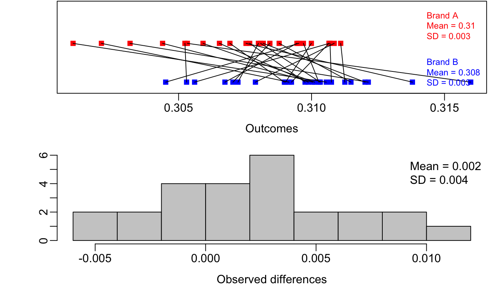
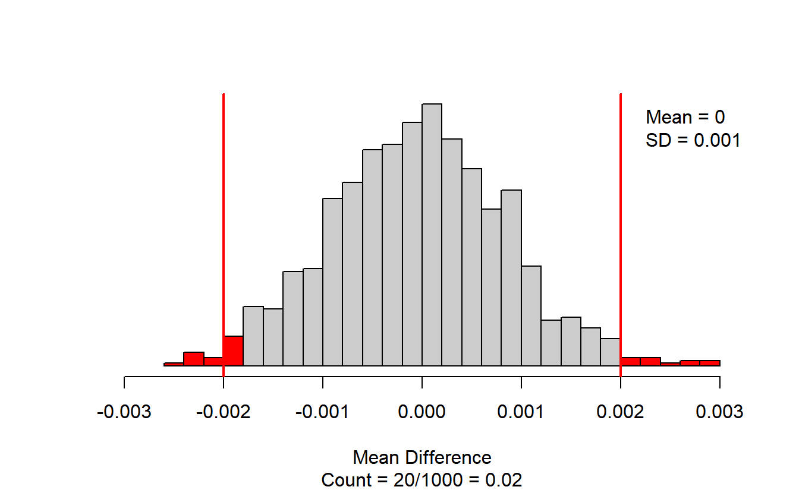
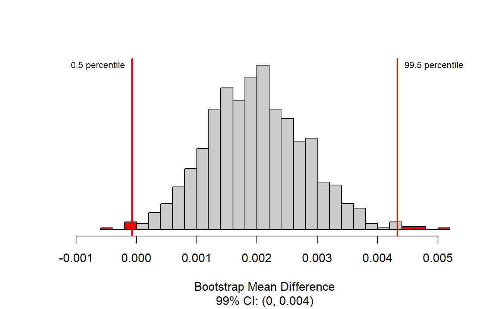
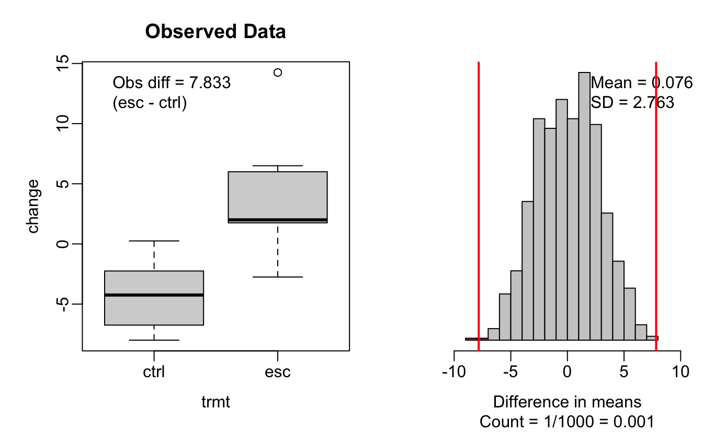
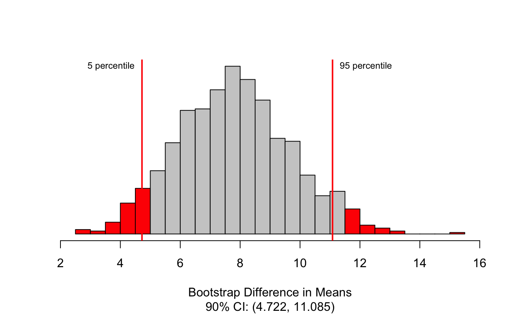

Chapter 6 Inference for quantitative data
Focusing now on statistical inference for quantitative data, we will revisit and expand upon the foundational aspects of hypothesis testing from Section 5.1.
The important data structure for this chapter is a quantitative response variable (that is, the outcome is numerical). The three data structures we detail are:
- one quantitative response variable, summarized by a single mean,
- one quantitative response variable which is a difference across a pair of observations, summarized by a paired mean difference, and
- a quantitative response variable broken down by a binary explanatory variable, summarized by a difference in means.
When appropriate, each of the data structures will be analyzed using the two methods introduced in Section 5.1: simulation-based and theory-based.
As we build on the inferential ideas, we will visit new foundational concepts in statistical inference. One key new idea rests in estimating how the sample mean (as opposed to the sample proportion) varies from sample to sample; the resulting value is referred to as the standard error of the mean. We will also introduce a new important mathematical model, the \(t\)-distribution (as the foundation for the \(t\)-test).To summarize a quantitative response variable, we focus on the sample mean (instead of, for example, the sample median or the range of the observations) because of the well-studied mathematical model which describes the behavior of the sample mean. The sample mean will be calculated in one group, two paired groups, and two independent groups. We will not cover mathematical models which describe other statistics, but the bootstrap and randomization techniques described below are immediately extendable to any function of the observed data. The techniques described for each setting will vary slightly, but you will be well served to find the structural similarities across the different settings.
6.1 One mean
Notation.
- \(n\) = sample size
- \(\bar{x}\) = sample mean
- \(s\) = sample standard deviation
- \(\mu\) = population mean
- \(\sigma\) = population standard deviation
A single mean is used to summarize data when we measured a single quantitative variable on each observational unit, e.g., GPA, age, salary. Aside from slight differences in notation, the inferential methods presented in this section will be identical to those for a paired mean difference, as we will see in Section 6.2.
6.1.1 Bootstrap confidence interval for \(\mu\)
In this section, we will use bootstrapping, first introduced in Section 5.3.2, to construct a confidence interval for a population mean. Recall that bootstrapping is best suited for modeling studies where the data have been generated through random sampling from a population. Our bootstrapped distribution of sample means will mimic the process of randomly sampling from a population to give us a sense of how sample means will vary from sample to sample.
Observed data
As an employer who subsidizes housing for your employees, you need to know the average monthly rental price for a three bedroom flat in Edinburgh. In order to walk through the example more clearly, let’s say that you are only able to randomly sample five Edinburgh flats (if this were a real example, you would surely be able to take a much larger sample size, possibly even being able to measure the entire population!).
Figure 6.1 presents the details of the random sample of observations where the monthly rent of five flats has been recorded.

Figure 6.1: Five randomly sampled flats in Edinburgh.
The sample average monthly rent of £1648 is a first guess at the price of three bedroom flats. However, as a student of statistics, you understand that one sample mean based on a sample of five observations will not necessarily equal the true population average rent for all three bedroom flats in Edinburgh. Indeed, you can see that the observed rent prices vary with a standard deviation of £340.232, and surely the average monthly rent would be different if a different sample of size five had been taken from the population. Fortunately, we can use bootstrapping to approximate the variability of the sample mean from sample to sample.
Variability of the statistic
As with the inferential ideas covered in Chapter 5, the inferential analysis methods in this chapter are grounded in quantifying how one data set differs from another when they are both taken from the same population.
Figure 6.2 shows how the unknown original population of all three bedroom flats in Edinburgh can be estimated by using many duplicates of the sample. This estimated population—consisting of infinitely many copies of the original sample—can then be used to generate bootstrapped resamples.

Figure 6.2: Using the original sample of five Edinburgh flats to generate an estimated population, which is then used to generate bootstrapped resamples. This process of generating a bootstrapped sample is equivalent to sampling five flats from the original sample, with replacement.
In Figure 6.2, the repeated bootstrap resamples are obviously different both from each other and from the original sample. Since the bootstrap resamples are taken from the same (estimated) population, these differences are due entirely to natural variability in the sampling procedure. By summarizing each of the bootstrap resamples (here, using the sample mean), we see, directly, the variability of the sample mean from sample to sample. The distribution of \(\bar{x}_{boot}\), the bootstrapped sample means, for the Edinburgh flats is shown in Figure 6.3.

Figure 6.3: Distribution of bootstrapped means from 1,000 simulated bootstrapped samples generated by sampling with replacement from our original sample of five Edinburgh flats. The histogram provides a sense for the variability of the average rent values from sample to sample for samples of size 5.
The bootstrapped average rent prices vary from £1250 to £1995 (with a small observed sample of size 5, a bootstrap resample can sometimes, although rarely, include only repeated measurements of the same observation).
Bootstrapping from one sample.
- Take a random sample of size \(n\) from the original sample, with replacement. This is called a bootstrapped resample.
- Record the sample mean (or statistic of interest) from the bootstrapped resample. This is called a bootstrapped statistic.
- Repeat steps (1) and (2) 1000s of times.
Due to theory that is beyond this text, we know that the bootstrap means \(\bar{x}_{boot}\) vary around the original sample mean, \(\bar{x}\), in a similar way to how different sample (i.e., different data sets which would produce different \(\bar{x}\) values) means vary around the true parameter \(\mu\). Therefore, an interval estimate for \(\mu\) can be produced using the \(\bar{x}_{boot}\) values themselves. A 95% bootstrap confidence interval for \(\mu\), the population mean rent price for three bedroom flats in Edinburgh, is found by locating the middle 95% of the bootstrapped sample means in Figure 6.3.
95% Bootstrap confidence interval for a population mean \(\mu\).
The 95% bootstrap confidence interval for the parameter \(\mu\) can be obtained directly using the ordered values \(\bar{x}_{boot}\) values — the bootstrapped sample means. Consider the sorted \(\bar{x}_{boot}\) values, and let \(\bar{x}_{boot, 0.025}\) be the 2.5th percentile and \(\bar{x}_{boot, 0.025}\) be the 97.5th percentile. The 95% confidence interval is given by:You can find confidence intervals of difference confidence levels by changing the percent of the distribution you take, e.g., locate the middle 90% of the bootstrapped statistics for a 90% confidence interval.
Using Figure 6.3, find the 90% and 95% confidence intervals for the true mean monthly rental price of a three bedroom flat in Edinburgh.
A 90% confidence interval is given by (£1429, £1876). The conclusion is that we are 90% confident that the true average rental price for three bedroom flats in Edinburgh lies somewhere between £1429 and £1876.
A 95% confidence interval is given by (£1389.75, £1916). The conclusion is that we are 95% confident that the true average rental price for three bedroom flats in Edinburgh lies somewhere between £1389.75 and £1916.Bootstrap percentile confidence interval for \(\sigma\) (special topic)
Suppose that the research question at hand seeks to understand how variable the rental price of the three bedroom flats are in Edinburgh. That is, your interest is no longer in the average rental price of the flats but in the standard deviation of the rental prices of all three bedroom flats in Edinburgh, \(\sigma\). You may have already realized that the sample standard deviation, \(s\), will work as a good point estimate for the parameter of interest: the population standard deviation, \(\sigma\). The point estimate of the five observations is calculated to be \(s =\) £340.23. While \(s =\) £340.23 might be a good guess for \(\sigma\), we prefer to have an interval. Although there is a mathematical model which describes how \(s\) varies from sample to sample, the mathematical model will not be presented in this text. But even without the mathematical model, bootstrapping can be used to find a confidence interval for the parameter \(\sigma\).
Describe the bootstrap distribution for the standard deviation shown in Figure 6.4.
The distribution is skewed left and centered near £340.23, which is the point estimate from the original data. Most observations in this distribution lie between £0 and £408.1.

Figure 6.4: The original Edinburgh data is bootstrapped 1,000 times. The histogram provides a sense for the variability of the standard deviation of the rent values from sample to sample.
Bootstrapping is not a solution to small sample sizes!
The example presented above is done for a sample with only five observations. As with analysis techniques that build on mathematical models, bootstrapping works best when a large random sample has been taken from the population. Bootstrapping is a method for capturing the variability of a statistic when the mathematical model is unknown — it is not a method for navigating small samples. As you might guess, the larger the random sample, the more accurately that sample will represent the target population.
6.1.2 Shifted bootstrap test for \(H_0: \mu = \mu_0\)
We can also use bootstrapping to conduct a simulation-based test of the null hypothesis that the population mean is equal to a specified value, \(\mu_0\), called the null value. In this case, we first shift each value in the data set so that the sample distribution is centered at \(\mu_0\). Then, we bootstrap from the shifted data in order to generate a null distribution of sample means. Consider the following example.
In 1851, Carl Wunderlich, a German physician, measured body temperatures of around 25,000 adults and found that the average body temperature was 98.6\(^{\circ}\)F, which we’ve believed ever since. However, a recent study conducted at Stanford University suggests that the average body temperature may actually be lower than 98.6\(^{\circ}\)F.147
Observed data
Curious if average body temperature has decreased since 1851, you decided to collect data on a random sample of twenty Montana State University students. The mean body temperature in your sample is \(\bar{x}\) = 97.47\(^{\circ}\)F, and the standard deviation is \(s\) = 0.35\(^{\circ}\)F. A dot plot of the data is shown in Figure 6.5, with summary statistics displayed below.
favstats(temperatures)#> min Q1 median Q3 max mean sd n missing
#> 96.7 97.3 97.5 97.7 98.1 97.5 0.353 20 0Figure 6.5: Distribution of body temperatures in a random sample of twenty Montana State University students.
Shifted bootstrapped null distribution
We would like to test the set of hypotheses \(H_0: \mu = 98.6\) versus \(H_A: \mu < 98.6\), where \(\mu\) is the true mean body temperature among all adults (in degrees F). If we were to simulate sample mean body temperatures under \(H_0\), we would expect the null distribution to be centered at \(\mu_0\) = 98.6\(^\circ\)F. However, if we bootstrap sample means from our observed sample, the bootstrap distribution will be centered at the sample mean body temperature \(\bar{x}\) = 97.5\(^\circ\)F.
To use bootstrapping to generate a null distribution of sample means, we first have to shift the data to be centered at the null value. We do this by adding \(\mu_0 - \bar{x} = 98.6 - 97.5 = 1.1^\circ\)F to each body temperature in the sample. This process is displayed in Figure 6.6.
Figure 6.6: Distribution of body temperatures in a random sample of twenty Montana State University students (blue) and the shifted body temperatures (red), found by adding 1.1 degree F to each original body temperature.
A bootstrapped null distribution generated from sampling 20 shifted temperatures, with replacement, from the shifted data 1,000 times is shown in Figure 6.7.
Figure 6.7: Bootstrapped null distribution of sample mean temperatures assuming the true mean temperature is 98.6 degrees F.
Shifted bootstrap null distribution for a sample mean.
To simulate a null distribution of sample means under the null hypothesis \(H_0: \mu = \mu_0\):
- Add \(\mu_0 - \bar{x}\) to each value in the original sample: \[ x_1 + \mu_0 - \bar{x}, \hspace{2.5mm} x_2 + \mu_0 - \bar{x}, \hspace{2.5mm} x_3 + \mu_0 - \bar{x}, \hspace{2.5mm} \ldots, \hspace{2.5mm} x_n + \mu_0 - \bar{x}. \] Note that if \(\bar{x}\) is larger than \(\mu\), then the quantity \(\mu_0 - \bar{x}\) will be negative, and you will be subtracting the distance between \(\mu\) and \(\bar{x}\) from each value.
- Generate 1000s of bootstrap resamples from this shifted distribution, plotting the shifted bootstrap sample mean each time.
To calculate the p-value, since \(H_A: \mu < 98.6\), we find the proportion of simulated sample means that were less than or equal to our original sample mean, \(\bar{x}\) = 97.47. As shown in Figure 6.7, none of our simulated sample means were 97.5\(^\circ\)F or lower, giving us very strong evidence that the true mean body temperature among all Montana State University students is less than the commonly accepted 98.6\(^\circ\)F average temperature.
6.1.3 Theory-based inferential methods for \(\mu\)
As with the sample proportion, the variability of the sample mean is well described by the mathematical theory given by the Central Limit Theorem. Similar to how we can model the behavior of the sample proportion \(\hat{p}\) using a normal distribution, the sample mean \(\bar{x}\) can also be modeled using a normal distribution when certain conditions are met. However, because of missing information about the inherent variability in the population, a \(t\)-distribution is used in place of the standard normal when performing hypothesis test or confidence interval analyses.
When we collect a sufficiently large sample of \(n\) independent observations from a population with mean \(\mu\) and standard deviation \(\sigma\), the sampling distribution of \(\bar{x}\) will be nearly normal with \[\begin{align*} &\text{Mean}=\mu &&\text{Standard Deviation }(SD) = \frac{\sigma}{\sqrt{n}} \end{align*}\]
Before diving into confidence intervals and hypothesis tests using \(\bar{x}\), we first need to cover two topics:
- When we modeled \(\hat{p}\) using the normal distribution, certain conditions had to be satisfied. The conditions for working with \(\bar{x}\) are a little more complex, and below, we will discuss how to check conditions for inference using a mathematical model.
- The standard deviation of the sample mean is dependent on the population standard deviation, \(\sigma\). However, we rarely know \(\sigma\), and instead we must estimate it. Because this estimation is itself imperfect, we use a new distribution called the \(t\)-distribution to fix this problem.
Evaluating the two conditions required for modeling \(\bar{x}\) using theory-based methods
There are two conditions required to apply the Central Limit Theorem for a sample mean \(\bar{x}\). When the sample observations are independent and the sample size is sufficiently large, the normal model will describe the variability in sample means quite well; when the observations violate the conditions, the normal model can be inaccurate.
Conditions for the modeling \(\bar{x}\) using theory-based methods.
The sampling distribution for \(\bar{x}\) based on a sample of size \(n\) from a population with a true mean \(\mu\) and true standard deviation \(\sigma\) can be modeled using a normal distribution when:
Independence. The sample observations must be independent, The most common way to satisfy this condition is when the sample is a simple random sample from the population. If the data come from a random process, analogous to rolling a die, this would also satisfy the independence condition.
Normality. When a sample is small, we also require that the sample observations come from a normally distributed population. We can relax this condition more and more for larger and larger sample sizes. This condition is obviously vague, making it difficult to evaluate, so next we introduce a couple rules of thumb to make checking this condition easier.
When these conditions are satisfied, then the sampling distribution of \(\bar{x}\) is approximately normal with mean \(\mu\) and standard deviation \(\frac{\sigma}{\sqrt{n}}\).
General rule: how to perform the normality check.
There is no perfect way to check the normality condition, so instead we use two general rules:
- \(\mathbf{n < 30}\): If the sample size \(n\) is less than 30
and there are no clear outliers in the data,
then we typically assume the data come from
a nearly normal distribution to satisfy the
condition.
- \(\mathbf{n \geq 30}\): If the sample size \(n\) is at least 30 and there are no particularly extreme outliers, then we typically assume the sampling distribution of \(\bar{x}\) is nearly normal, even if the underlying distribution of individual observations is not.
In this first course in statistics, you aren’t expected to develop perfect judgement on the normality condition. However, you are expected to be able to handle clear cut cases based on the rules of thumb.148
Consider the following two plots that come from simple random samples from different populations. Their sample sizes are \(n_1 = 15\) and \(n_2 = 50\).
Are the independence and normality conditions met in each case?
Each sample is from a simple random sample of its respective population, so the independence condition is satisfied. Let’s next check the normality condition for each using the rule of thumb.
The first sample has fewer than 30 observations, so we are watching for any clear outliers. None are present; while there is a small gap in the histogram on the right, this gap is small and 20% of the observations in this small sample are represented in that far right bar of the histogram, so we can hardly call these clear outliers. With no clear outliers, the normality condition is reasonably met.
The second sample has a sample size greater than 30 and includes an outlier that appears to be roughly 5 times further from the center of the distribution than the next furthest observation. This is an example of a particularly extreme outlier, so the normality condition would not be satisfied.


In practice, it’s typical to also do a mental check to evaluate whether we have reason to believe the underlying population would have moderate skew (if \(n < 30\)) or have particularly extreme outliers \((n \geq 30)\) beyond what we observe in the data. For example, consider the number of followers for each individual account on Twitter, and then imagine this distribution. The large majority of accounts have built up a couple thousand followers or fewer, while a relatively tiny fraction have amassed tens of millions of followers, meaning the distribution is extremely skewed. When we know the data come from such an extremely skewed distribution, it takes some effort to understand what sample size is large enough for the normality condition to be satisfied.
Introducing the \(t\)-distribution
In practice, we cannot directly calculate the standard deviation for \(\bar{x}\) since we do not know the population standard deviation, \(\sigma\). We encountered a similar issue when computing the standard error for a sample proportion, which relied on the population proportion, \(\pi\). Our solution in the proportion context was to use sample value in place of the population value to calculate a standard error. We’ll employ a similar strategy to compute the standard error of \(\bar{x}\), using the sample standard deviation \(s\) in place of \(\sigma\): \[\begin{align*} SE(\bar{x}) = \frac{s}{\sqrt{n}} \approx SD(\bar{x}) = \frac{\sigma}{\sqrt{n}}. \end{align*}\] The standard error of \(\bar{x}\) provides an estimate of the standard deviation of \(\bar{x}\). This strategy tends to work well when we have a lot of data and can estimate \(\sigma\) using \(s\) accurately. However, the estimate is less precise with smaller samples, and this leads to problems when using the normal distribution to model \(\bar{x}\) if we do not know \(\sigma\).
We’ll find it useful to use a new distribution for inference calculations called the \(t\)-distribution. A \(t\)-distribution, shown as a solid line in Figure 6.8, has a bell shape. However, its tails are thicker than the normal distribution’s, meaning observations are more likely to fall beyond two standard deviations from the mean than under the normal distribution.
The extra thick tails of the \(t\)-distribution are exactly the correction needed to resolve the problem (due to extra variability of the test statistic) of using \(s\) in place of \(\sigma\) in the \(SE(\bar{x})\) calculation.

Figure 6.8: Comparison of a \(t\)-distribution and a normal distribution.
The \(t\)-distribution is always centered at zero and has a single parameter: degrees of freedom (\(df\)). The degrees of freedom describes the precise form of the bell-shaped \(t\)-distribution. Several \(t\)-distributions are shown in Figure 6.9 in comparison to the normal distribution.
For inference with a single mean, we’ll use a \(t\)-distribution with \(df = n - 1\) to model the sample mean when the sample size is \(n\). That is, when we have more observations, the degrees of freedom will be larger and the \(t\)-distribution will look more like the standard normal distribution; when the degrees of freedom is about 30 or more, the \(t\)-distribution is nearly indistinguishable from the normal distribution.

Figure 6.9: The larger the degrees of freedom, the more closely the \(t\)-distribution resembles the standard normal distribution.
Degrees of freedom: \(df\).
The degrees of freedom describes the shape of the \(t\)-distribution. The larger the degrees of freedom, the more closely the distribution approximates the normal model.
When modeling \(\bar{x}\) using the \(t\)-distribution, use \(df = n - 1\).
The \(t\)-distribution allows us greater flexibility than
the normal distribution when analyzing numerical data.
In practice, it’s common to use statistical software,
such as R, Python, or SAS for these analyses.
In R, the function used for calculating probabilities under a \(t\)-distribution is pt() (which should seem similar to the previous R function pnorm()).
Don’t forget that with the \(t\)-distribution, the degrees of freedom must always be specified!
For the examples and guided practices below, use R to find the answers. We recommend trying the problems so as to get a sense for how the \(t\)-distribution can vary in width depending on the degrees of freedom, and to confirm your working
understanding of the \(t\)-distribution.
What proportion of the \(t\)-distribution with 18 degrees of freedom falls below -2.10?
Just like a normal probability problem, we first draw the picture in Figure 6.10 and shade the area below -2.10.
Using statistical software, we can obtain a precise value: 0.0250.
# using pt() to find probability under the $t$-distribution
pt(-2.10, df = 18)
#> [1] 0.025
Figure 6.10: The \(t\)-distribution with 18 degrees of freedom. The area below -2.10 has been shaded.
A \(t\)-distribution with 20 degrees of freedom is shown in the top panel of Figure 6.11. Estimate the proportion of the distribution falling above 1.65.
Note that with 20 degrees of freedom, the \(t\)-distribution is relatively close to the normal distribution. With a normal distribution, this would correspond to about 0.05, so we should expect the \(t\)-distribution to give us a value in this neighborhood. Using statistical software: 0.0573.
# using pt() to find probability under the $t$-distribution
pt(1.65, df = 20, lower.tail=FALSE)
#> [1] 0.0573
# or
1 - pt(1.65, df = 20)
#> [1] 0.0573

Figure 6.11: Top: The \(t\)-distribution with 20 degrees of freedom, with the area above 1.65 shaded. Bottom: The \(t\)-distribution with 2 degrees of freedom, with the area further than 3 units from 0 shaded.
A \(t\)-distribution with 2 degrees of freedom is shown in the bottom panel of Figure 6.11. Estimate the proportion of the distribution falling more than 3 units from the mean (above or below).
With so few degrees of freedom, the \(t\)-distribution will give a more notably different value than the normal distribution. Under a normal distribution, the area would be about 0.003 using the 68-95-99.7 rule. For a \(t\)-distribution with \(df = 2\), the area in both tails beyond 3 units totals 0.0955. This area is dramatically different than what we obtain from the normal distribution.
# using pt() to find probability under the $t$-distribution
2 * pt(-3, df = 2)
#> [1] 0.0955What proportion of the \(t\)-distribution with 19 degrees of freedom falls above -1.79 units?149
One sample \(t\)-confidence intervals
Let’s get our first taste of applying the \(t\)-distribution in the context of an example about the mercury content of dolphin muscle. Elevated mercury concentrations are an important problem for both dolphins and other animals, like humans, who occasionally eat them.

Figure 6.12: A Risso’s dolphin. Photo by Mike Baird, www.bairdphotos.com.
Observed data
We will identify a confidence interval for the average mercury content in dolphin muscle using a sample of 19 Risso’s dolphins from the Taiji area in Japan. The data are summarized in Table 6.1. The minimum and maximum observed values can be used to evaluate whether or not there are clear outliers.
| \(n\) | \(\bar{x}\) | \(s\) | minimum | maximum |
|---|---|---|---|---|
| 19 | 4.4 | 2.3 | 1.7 | 9.2 |
Are the independence and normality conditions satisfied for this data set?
The observations are a simple random sample, therefore independence is reasonable. The summary statistics in Table 6.1 do not suggest any clear outliers, with all observations within 2.5 standard deviations of the mean. Based on this evidence, the normality condition seems reasonable.
In the normal model, we used \(z^{\star}\) and the standard error to determine the width of a confidence interval. We revise the confidence interval formula slightly when using the \(t\)-distribution: \[\begin{align*} &\text{point estimate} \ \pm\ t^{\star}_{df} \times SE(\text{point estimate}) &&\to &&\bar{x} \ \pm\ t^{\star}_{df} \times \frac{s}{\sqrt{n}}, \end{align*}\] where \(df = n - 1\) when computing a one-sample \(t\)-interval.
Using the summary statistics in Table 6.1, compute the standard error for the average mercury content in the \(n = 19\) dolphins.
We plug in \(s\) and \(n\) into the formula: \(SE(\bar{x}) = s / \sqrt{n} = 2.3 / \sqrt{19} = 0.528\).
The value \(t^{\star}_{df}\) is a cutoff we obtain based on the confidence level and the \(t\)-distribution with \(df\) degrees of freedom. That cutoff is found in the same way as with a normal distribution: we find \(t^{\star}_{df}\) such that the fraction of the \(t\)-distribution with \(df\) degrees of freedom within a distance \(t^{\star}_{df}\) of 0 matches the confidence level of interest.
When \(n = 19\), what is the appropriate degrees of freedom? Find \(t^{\star}_{df}\) for this degrees of freedom and the confidence level of 95%.
The degrees of freedom is easy to calculate: \(df = n - 1 = 18\).
Using statistical software, we find the cutoff where the upper tail is equal to 2.5%: \(t^{\star}_{18} =\) 2.10. The area below -2.10 will also be equal to 2.5%. That is, 95% of the \(t\)-distribution with \(df = 18\) lies within 2.10 units of 0.
# use qt() to find the t-cutoff (with 95% in the middle)
qt(0.025, df = 18)
#> [1] -2.1
qt(0.975, df = 18)
#> [1] 2.1Compute and interpret the 95% confidence interval for the average mercury content in Risso’s dolphins.
We can construct the confidence interval as \[\begin{align*} \bar{x} \ \pm\ t^{\star}_{18} \times SE(\bar{x}) \quad \to \quad 4.4 \ \pm\ 2.10 \times 0.528 \quad \to \quad (3.29, 5.51) \end{align*}\] We are 95% confident the average mercury content of muscles in the population of Risso’s dolphins is between 3.29 and 5.51 \(\mu\)g/wet gram, which is considered extremely high.
Finding a \(t\)-confidence interval for a population mean, \(\mu\).
Based on a sample of \(n\) independent and nearly normal observations, a confidence interval for the population mean is \[\begin{align*} &\text{point estimate} \ \pm\ t^{\star}_{df} \times SE(\text{point estimate}) &&\to &&\bar{x} \ \pm\ t^{\star}_{df} \times \frac{s}{\sqrt{n}} \end{align*}\] where \(\bar{x}\) is the sample mean, \(t^{\star}_{df}\) corresponds to the confidence level and degrees of freedom \(df\), and \(SE\) is the standard error as estimated by the sample.
The FDA’s webpage provides some data on mercury content of fish. Based on a sample of 15 croaker white fish (Pacific), a sample mean and standard deviation were computed as 0.287 and 0.069 ppm (parts per million), respectively. The 15 observations ranged from 0.18 to 0.41 ppm. We will assume these observations are independent. Based on the summary statistics of the data, do you have any objections to the normality condition of the individual observations?150
Calculate the standard error of \(\bar{x}\) using the data summaries in the previous Guided Practice. If we are to use the \(t\)-distribution to create a 90% confidence interval for the actual mean of the mercury content, identify the degrees of freedom and \(t^{\star}_{df}\).
The standard error: \(SE(\bar{x}) = \frac{0.069}{\sqrt{15}} = 0.0178\).
Degrees of freedom: \(df = n - 1 = 14\).
Since the goal is a 90% confidence interval, we choose \(t_{14}^{\star}\) so that the two-tail area is 0.1: \(t^{\star}_{14} = 1.76\).
# use qt() to find the t-cutoff (with 90% in the middle)
qt(0.05, df = 14)
#> [1] -1.76
qt(0.95, df = 14)
#> [1] 1.76Using the information and results of the previous Guided Practice and Example, compute a 90% confidence interval for the average mercury content of croaker white fish (Pacific).151
The 90% confidence interval from the previous Guided Practice is 0.256 ppm to 0.318 ppm. Can we say that 90% of croaker white fish (Pacific) have mercury levels between 0.256 and 0.318 ppm?152
One sample \(t\)-tests
Now that we’ve used the \(t\)-distribution for making a confidence intervals for a mean, let’s speed on through to hypothesis tests for the mean.
The test statistic for assessing a single mean is a T.
The T score is a ratio of how the sample mean differs from the hypothesized mean as compared to how the observations vary.
\[\begin{align*} T = \frac{\bar{x} - \mbox{null value}}{s/\sqrt{n}} \end{align*}\]
When the null hypothesis is true and the conditions are met, T has a \(t\)-distribution with \(df = n - 1\).
Conditions:
- independently observed data
- large samples and no extreme outliers
Compare the T score — the standardized sample mean — to the Z score — the standardized sample proportion — presented in Section 5.3.3. Why do we use a “Z” when standardizing proportions, but a “T” when standardizing means?153
Is the typical US runner getting faster or slower over time? We consider this question in the context of the Cherry Blossom Race, which is a 10-mile race in Washington, DC each spring.
The average time for all runners who finished the Cherry Blossom Race in 2006 was 93.29 minutes (93 minutes and about 17 seconds). We want to determine using data from 100 participants in the 2017 Cherry Blossom Race whether runners in this race are getting faster or slower, versus the other possibility that there has been no change.
What are appropriate hypotheses for this context?154
The data come from a simple random sample of all participants, so the observations are independent.
 A histogram of the race times is given to evaluate if we can move forward with a t-test. Should we be worried about the normality condition?155
A histogram of the race times is given to evaluate if we can move forward with a t-test. Should we be worried about the normality condition?155
When completing a hypothesis test for the one-sample mean, the process is nearly identical to completing a hypothesis test for a single proportion. First, we find the Z score using the observed value, null value, and standard error; however, we call it a T score since we use a \(t\)-distribution for calculating the tail area. Then we find the p-value using the same ideas we used previously: find the area under the \(t\)-distribution as or more extreme than our T score.
With both the independence and normality conditions satisfied, we can proceed with a hypothesis test using the \(t\)-distribution. The sample mean and sample standard deviation of the sample of 100 runners from the 2017 Cherry Blossom Race are 97.32 and 16.98 minutes, respectively. Recall that the sample size is 100 and the average run time in 2006 was 93.29 minutes. Find the test statistic and p-value. What is your conclusion?
The hypotheses, found in a previous Guided Practice, are:
\(H_0: \mu = 93.29\) minutes
\(H_A: \mu \neq 93.29\) minutes
To find the test statistic (T score), we first must determine the standard error: \[\begin{align*} SE(\bar{x}) = 16.98 / \sqrt{100} = 1.70 \end{align*}\] Now we can compute the T score using the sample mean (97.32), null value (98.29), and \(SE\): \[\begin{align*} T = \frac{97.32 - 93.29}{1.70} = 2.37 \end{align*}\] For \(df = 100 - 1 = 99\), we can determine using statistical software that the area under a \(t\)-distribution with 99 \(df\) that is above our observed T score of 2.37 is 0.01 (see below), which we double to get the p-value: 0.02.
Because the p-value is small, the data provide strong evidence that the average run time for the Cherry Blossom Run in 2017 is different than the 2006 average.
# using pt() to find the p-value
1 - pt(2.37, df = 99)
#> [1] 0.00986When using a \(t\)-distribution, we use a T score (similar to a Z score).
To help us remember to use the \(t\)-distribution, we use a \(T\) to represent the test statistic, and we often call this a T score. The Z score and T score are computed in the exact same way and are conceptually identical: each represents how many standard errors the observed value is from the null value.
6.2 Paired mean difference
Notation.
- \(n\) = number of pairs in paired samples
- \(\bar{x}_{d}\) = sample mean of differences in paired samples
- \(s_{d}\) = sample standard deviation of differences in paired samples
- \(\mu_{d}\) = population mean of differences in paired samples
- \(\sigma_{d}\) = population standard deviation of differences in paired samples
Paired data represent a particular type of experimental structure where the analysis is somewhat akin to a one-sample analysis (see Section 6.1) but has other features that resemble a two-sample analysis (which we will see in Section 6.3). Quantitative measurements are made on each of two different levels of an explanatory variable, but those measurements are paired — each observational unit consists of two measurements, and the two measurements are subtracted such that only the difference is retained. Table 6.2 presents some examples of studies where paired designs were implemented.
| Observational unit | Comparison groups | Measurement | Value of interest |
|---|---|---|---|
| Car | Smooth Turn vs Quick Spin | amount of tire tread after 1,000 miles | difference in tread |
| Married heterosexual couple | Husband vs Wife | age | difference in age |
| Textbook | UCLA vs Amazon | price of new text | difference in price |
| Individual person | Pre-course vs Post-course | exam score | difference in score |
Paired data.
Two sets of observations are paired if each observation in one set has a special correspondence or connection with exactly one observation in the other data set.For inferential methods applied to paired data, the analysis is virtually identical to the one-sample approach given in Section 6.1. The key to working with paired data is to consider the measurement of interest to be the difference in measured values across the pair of observations. Thinking about the differences as a single observation on an observational unit changes the paired setting into the one-sample setting.
6.2.1 Shifted bootstrap test for \(H_0: \mu_d = 0\)
Consider an experiment done to measure whether tire brand Smooth Turn or tire brand Quick Spin has longer tread wear. That is, after 1,000 miles on a car, which brand of tires has more tread, on average?
Observed data
The observed data represent 25 tread measurements (in inches) taken on 25 Smooth Turn tires and 25 Quick Spin tires. The study used a total of 25 cars, so on each car, one brand was randomly assigned to the front driver’s side tire and the other to the front passenger’s side tire. Figure 6.13 presents the observed data. The Smooth Turn manufacturer looks at the box plot below and says:
clearly the tread on Smooth Turn tires is higher, on average, than the tread on Quick Spin tires after 1,000 miles of driving.
The Quick Spin manufacturer is skeptical and retorts:
but with only 25 cars, it seems that the variability in road conditions (sometimes one tire hits a pothole, etc.) could be what leads to the small difference in average tread amount.
We’d like to be able to systematically distinguish between what the Smooth Turn manufacturer sees in the plot and what the Quick Spin manufacturer sees in the plot. Fortunately for us, we have an excellent way to simulate the natural variability (from road conditions, etc.) that can lead to tires being worn at different rates: bootstrapping.

Figure 6.13: Boxplots of the tire tread remaining after 1,000 miles by the brand of tire from which the original measurements came. Gray lines connect the same cars.
Since these are paired data, we are only interested in the differences in tire tread between the two brands on each car. The dotplot in Figure 6.14 displays these differences, with summary statistics displayed below.
favstats(differences)
#> min Q1 median Q3 max mean sd n missing
#> -0.00506 -0.000972 0.00205 0.0042 0.0107 0.00196 0.00431 25 0Figure 6.14: Difference in tire tread (in inches) remaining after 1,000 miles between the two brands (Smooth Turn – Quick Spin).
Variability of the statistic
A simulation-based test will identify whether the differences seen in the box plot below could plausibly have happened just by chance variability. As before, we will simulate the variability in sample statistics under the assumption that the null hypothesis is true. In this study, the null hypothesis is that average difference in tire tread wear between Smooth Turn and Quick Spin tires is zero. The experiment was conducted to determine whether Smooth Turn or Quick Spin has longer tread wear. Taking the order of differences to be Smooth Turn \(-\) Quick Spin, we express the hypotheses as follows.
- \(H_0: \mu_d = 0\), the true mean difference in tire tread remaining after 1,000 miles between Smooth Turn and Quick Spin (Smooth Turn \(-\) Quick Spin) tires is equal to zero.
- \(H_A: \mu_d \neq 0\), the true mean difference in tire tread remaining after 1,000 miles between Smooth Turn and Quick Spin (Smooth Turn \(-\) Quick Spin) tires is not equal to zero.
To simulate the null distribution of mean differences in tread, we will implement the same method used in Section 6.1.2 using a shifted bootstrap distribution.
Shifted bootstrap null distribution for a sample mean difference.
To simulate a null distribution of sample mean differences under the null hypothesis \(H_0: \mu_d = 0\),
- Subtract \(\bar{x}_d\) from each difference in the original sample:156
\[ x_1 - \bar{x}_d , \hspace{2.5mm} x_2 - \bar{x}_d, \hspace{2.5mm} x_3 - \bar{x}_d, \hspace{2.5mm} \ldots, \hspace{2.5mm} x_n - \bar{x}_d. \] Note that if \(\bar{x}_d\) is a negative number, then you will be adding the distance between \(0\) and \(\bar{x}_d\) to each value. - Generate 1000s of bootstrap resamples from this shifted distribution, plotting the shifted bootstrap sample mean difference each time.
To use bootstrapping to generate a null distribution of sample mean differences in tire tread, we first have to shift the data to be centered at the null value of zero. We shift the data by subtracting \(\bar{x}_d\) = 0.00196 from each tire tread difference in the sample. This process is displayed in Figure 6.15.
Figure 6.15: Mean difference in tire tread (in inches) remaining after 1,000 miles between the two brands (Smooth Turn – Quick Spin) (blue), and the shifted mean differences in tire tread (red), found by subtracting 0.00196 to each original difference.
Observed statistic vs. null value
By repeatedly sampling 25 cars with replacement from the shifted bootstrap null distribution, we can create a distribution of the sample mean difference in tire tread, as seen in Figure 6.16. As expected (because the differences were generated under the null hypothesis), the histogram is centered at zero. A line has been drawn at the observed mean difference, \(\bar{x}_d\) = 0.00196, which is nowhere near the differences simulated from natural variability when we assume there is no difference in tire tread wear between brands. Because the observed mean difference in tire tread is so far away from the natural variability of the randomized mean differences in tire tread, we believe that there is a significant difference in tire tread wear between Smooth Turn and Quick Spin brand tires, on average.
To be precise, the proportion of simulated \(\bar{x}_d\)’s that are 0.00196 inches or further away from zero is 0.023. This p-value gives us strong evidence in favor of our alternative \(H_A: \mu_d \neq 0\). Our conclusion is that the extra amount of tire tread remaining in Smooth Turn brand tires after 1,000 miles, on average, is due to more than just natural variability. Data from this experiment suggest that, on average, Smooth Turn tires differ in tread wear compared to Quick Spin tires.

Figure 6.16: Histogram of 1000 simulated mean differences in tire tread, assuming that the two brands perform equally, on average.
6.2.2 Bootstrap confidence interval for \(\mu_d\)
In an earlier edition of this textbook, we found that Amazon prices were, on average, lower than those of the UCLA Bookstore for UCLA courses in 2010. It’s been several years, and many stores have adapted to the online market, so we wondered, how is the UCLA Bookstore doing today?
Observed data
We sampled 201 UCLA courses. Of those, 68 required books could be found on Amazon.
ucla_textbooks_f18 data can be found in the openintro package.
A portion of the data set from these courses is shown in Table 6.3, where prices are in US dollars. Here the differences are taken as \[\begin{align*} \text{UCLA Bookstore price} - \text{Amazon price} \end{align*}\]
It is important that we always subtract using a consistent order; here Amazon prices are always subtracted from UCLA prices. The first difference shown in Table 6.3 is computed as \(47.97 - 47.45 = 0.52\). Similarly, the second difference is computed as \(14.26 - 13.55 = 0.71\), and the third is \(13.50 - 12.53 = 0.97\).
| subject | course_num | bookstore_new | amazon_new | price_diff |
|---|---|---|---|---|
| American Indian Studies | M10 | 48.0 | 47.5 | 0.52 |
| Anthropology | 2 | 14.3 | 13.6 | 0.71 |
| Arts and Architecture | 10 | 13.5 | 12.5 | 0.97 |
| Asian | M60W | 49.3 | 55.0 | -5.69 |
A dot plot of the data is shown in Figure 6.17, with summary statistics displayed below.
favstats(ucla_textbooks_f18$price_diff)#> min Q1 median Q3 max mean sd n missing
#> -12.2 -0.992 0.625 2.99 75.2 3.58 13.4 68 0Figure 6.17: Distribution of differences in new textbook price (UCLA Bookstore – Amazon) in US dollars for 68 required textbooks at UCLA.
Each textbook has two corresponding prices in the data set: one for the UCLA Bookstore and one for Amazon. Thus, the two prices for the same textbook are paired, and our analysis need only focus on the differences in textbook price between the two suppliers.
Variability of the statistic
Following the example of bootstrapping a single mean, the observed mean differences can be bootstrapped in order to understand the variability of the average difference from sample to sample. We can then use the bootstrap distribution of mean differences to calculate bootstrap percentile confidence intervals for the true mean difference in the population.
In Figure 6.18, a 99% confidence interval for the mean difference in the cost of a new book at the UCLA Bookstore compared with Amazon has been calculated. The bootstrap percentile interval is computing using the 0.5th percentile and 99.5th percentile of the bootstrapped mean differences and is found to be (-0.044, 8.138). Since this confidence interval contains zero, it does not support the hypothesis that the UCLA Bookstore price is, on average, higher than the Amazon price. That is, since the interval contains both negative and positive values, it is plausible that the prices of UCLA textbooks are lower, on average, than Amazon, and it is also plausible that the prices of UCLA textbooks are higher, on average, than Amazon. We would interpret the interval as follows: We are 99% confident that, on average, new textbook prices at the UCLA Bookstore are between $0.04 lower to $8.14 higher than the same textbook on Amazon.

Figure 6.18: Bootstrap distribution for the average difference in new book price at the UCLA Bookstore versus Amazon (UCLA – Amazon). The bounds for a 99% bootstrap percentile confidence interval are superimposed in red, and the observed mean difference in new book price is superimposed in blue.
6.2.3 Theory-based inferential methods for \(\mu_d\)
Thinking about the paired differences as a single observation on an observational unit, theory-based inferential methods for a paired mean difference are identical to theory-based methods for a single mean. Theory-based methods for the one sample mean case are covered in Section 6.1.3. The only difference between the methods in Section 6.1 and the methods described in this section is notation, shown below. The subscript “d” stands for “difference” since our variable is a paired difference.
| One Mean | Paired Mean Difference | |
|---|---|---|
| Population mean | \(\mu\) | \(\mu_d\) |
| Population standard deviation | \(\sigma\) | \(\sigma_d\) |
| Sample mean | \(\bar{x}\) | \(\bar{x}_d\) |
| Sample standard deviation | \(s\) | \(s_d\) |
| Sample size | \(n\) | \(n\) |
Observed data
Consider again the paired textbook price data in the previous section. A histogram of the differences in new textbook price between the UCLA Bookstore and Amazon is shown in Figure 6.19, and summary statistics are displayed in Table 6.4.
| \(n\) | \(\bar{x}_{d}\) | \(s_{d}\) |
|---|---|---|
| 68 | $3.58 | $13.42 |

Figure 6.19: Histogram of the difference in price for each book sampled.
Variability of the statistic
To analyze a paired data set, we simply analyze the differences using the same one sample \(t\)-distribution techniques we applied in Section 6.1.3.
Set up a hypothesis test to determine whether, on average, the UCLA Bookstore’s price for a new textbook is higher than the price of the same book on Amazon. Also, check the conditions for whether we can move forward with the test using the \(t\)-distribution.
We are considering two scenarios:
- \(H_0\): \(\mu_{d} = 0\). The true mean difference in new textbook prices (UCLA – Amazon) is equal to zero.
- \(H_A\): \(\mu_{d} > 0\). The true mean difference in new textbook prices (UCLA – Amazon) is greater than zero.
Next, we check the independence and normality conditions:
The observations are based on a simple random sample, so independence is reasonable.
While there are some outliers, \(n = 68\) and none of the outliers are particularly extreme, so the normality of \(\bar{x}\) is satisfied.
Observed statistic vs. null statistics
As mentioned previously, the methods applied to a difference will be identical to the one-sample techniques. Therefore, the full hypothesis test framework is given as an example.
Complete the hypothesis test started in the previous Example.
To start, compute the standard error associated with \(\bar{x}_{d}\) using the sample standard deviation of the differences (\(s_{d} = 13.42\)) and the number of differences (\(n = 68\)): \[\begin{align*} SE(\bar{x}_{d}) = \frac{s_{d}}{\sqrt{n}} = \frac{13.42}{\sqrt{68}} = 1.63 \end{align*}\] The test statistic is the T-score of \(\bar{x}_{d}\) under the null condition that the actual mean difference is 0: \[\begin{align*} T = \frac{\bar{x}_{d} - 0} { SE(\bar{x}_{d})} = \frac{3.58 - 0}{1.63} = 2.20 \end{align*}\] This value tells us that the sample mean difference in price, $3.58, is 2.20 standard errors above zero (the null value).
To visualize the p-value, the approximate sampling distribution of \(\bar{x}_{d}\) is drawn as though \(H_0\) is true, and the p-value is represented by the shaded upper tail in Figure 6.20. This area is equivalent to the area above 2.20 on a \(t\)-distribution with \(df = n - 1\) = 68 \(-\) 1 = 67 degrees of freedom.
Using the pt function in R, we find the
upper tail area of 0.0156.

Figure 6.20: Distribution of \(\bar{x}_{d}\) under the null hypothesis of no difference. The observed average difference of 2.98 is marked with the shaded areas more extreme than the observed difference given as the p-value.
Create a theory-based 95% confidence interval for the average price difference between books at the UCLA Bookstore and books on Amazon.
Conditions for using theory-based methods have already been verified and the standard error computed in the previous Example.
To find the confidence interval, identify \(t^{\star}_{67}\) using theR command: qt(0.975, 67) = 2.00,
and plug it, the point estimate,
and the standard error into the confidence
interval formula:
\[\begin{align*}
\bar{x}_d \ \pm\ t^{\star} \times SE(\bar{x}_d)
\quad\to\quad
3.58 \ \pm\ 2.00 \times 1.63
\quad\to\quad (0.32, 6.84)
\end{align*}\]
We are 95% confident that Amazon is, on average,
between $0.32 and $6.84 less expensive
than the UCLA Bookstore for UCLA course books.
6.3 Difference of two means
Notation.
- \(n_1\), \(n_2\) = sample sizes of two independent samples
- \(\bar{x}_1\), \(\bar{x}_2\) = sample means of two independent samples
- \(s_1\), \(s_2\) = sample standard deviations of two independent samples
- \(\mu_1\), \(\mu_2\) = population means of two independent populations
- \(\sigma_1\), \(\sigma_2\) = population standard deviations of two independent populations
In this section we consider a difference in two population means, \(\mu_1 - \mu_2\), under the condition that the data are not paired. Just as with a single sample, we identify conditions to ensure we can use the \(t\)-distribution with a point estimate of the difference, \(\bar{x}_1 - \bar{x}_2\), and a new standard error formula.
The details for working through inferential problems in the two independent means setting are strikingly similar to those applied to the two independent proportions setting. We first cover a randomization test where the observations are shuffled under the assumption that the null hypothesis is true. Then we bootstrap the data (with no imposed null hypothesis) to create a confidence interval for the true difference in population means, \(\mu_1 - \mu_2\). The mathematical model, here the \(t\)-distribution, is able to describe both the randomization test and the boostrapping as long as the conditions are met.
The inferential tools are applied to three different data contexts: determining whether stem cells can improve heart function, exploring the relationship between pregnant women’s smoking habits and birth weights of newborns, and exploring whether there is statistically significant evidence that one variation of an exam is harder than another variation. This section is motivated by questions like “Is there convincing evidence that newborns from mothers who smoke have a different average birth weight than newborns from mothers who don’t smoke?”
6.3.1 Randomization test for \(H_0: \mu_1 - \mu_2 = 0\)
An instructor decided to run two slight variations of the same exam. Prior to passing out the exams, she shuffled the exams together to ensure each student received a random version. Summary statistics for how students performed on these two exams are shown in Table 6.5 and plotted in Figure 6.21. Anticipating complaints from students who took Version B, she would like to evaluate whether the difference observed in the groups is so large that it provides convincing evidence that Version B was more difficult (on average) than Version A.
Observed data
| \(n\) | \(\bar{x}\) | \(s\) | minimum | maximum | |
|---|---|---|---|---|---|
| A | 58 | 75.1 | 13.9 | 44 | 100 |
| B | 55 | 72.0 | 13.8 | 38 | 100 |

Figure 6.21: Exam scores for students given one of three different exams.
Construct hypotheses to evaluate whether the observed difference in sample means, \(\bar{x}_A - \bar{x}_B=3.1\), is due to chance. We will later evaluate these hypotheses by computing a p-value for the test.158
Before moving on to evaluate the hypotheses in the previous Guided Practice, let’s think carefully about the dataset. Are the observations across the two groups independent? Are there any concerns about outliers?159
Variability of the statistic
In Section 5.4, the variability of the statistic (previously: \(\hat{p}_1 - \hat{p}_2\)) was visualized after shuffling the observations across the two treatment groups many times. The shuffling process implements the null hypothesis model (that there is no effect of the treatment). In the exam example, the null hypothesis is that exam A and exam B are equally difficult, so the average scores across the two tests should be the same. If the exams were equally difficult, due to natural variability, we would sometimes expect students to do slightly better on exam A (\(\bar{x}_A > \bar{x}_B\)) and sometimes expect students to do slightly better on exam B (\(\bar{x}_B > \bar{x}_A\)). The question at hand is: Does \(\bar{x}_A - \bar{x}_B=3.1\) indicate that exam A is easier than exam B?.
Figure 6.22 shows the process of randomizing the exam to the observed exam scores. If the null hypothesis is true, then the score on each exam should represent the true student ability on that material. It shouldn’t matter whether they were given exam A or exam B. By reallocating which student got which exam, we are able to understand how the difference in average exam scores changes due only to natural variability. There is only one iteration of the randomization process in Figure 6.22, leading to one simulated difference in average scores.

Figure 6.22: The version of the test (A or B) is randomly allocated to the test scores, under the null assumption that the tests are equally difficult.
Building on Figure 6.22, Figure 6.23 shows the values of the simulated statistics \(\bar{x}_{1, sim} - \bar{x}_{2, sim}\) over 1000 random simulations. We see that, just by chance, the difference in scores can range anywhere from -10 points to +10 points.

Figure 6.23: Histogram of differences in means, calculated from 1000 different randomizations of the exam types.
Observed statistic vs. null value
The goal of the randomization test is to assess the observed data, here the statistic of interest is \(\bar{x}_A - \bar{x}_B = 3.1\). The randomization distribution allows us to identify whether a difference of 3.1 points is more than one would expect by natural variability. By plotting the value of 3.1 on Figure 6.24, we can measure how different or similar 3.1 is to the randomized differences which were generated under the null hypothesis.

Figure 6.24: Histogram of differences in means, calculated from 1000 different randomizations of the exam types. The observed difference of 3.1 points is plotted as a vertical line, and the area more extreme than 3.1 is shaded to represent the p-value.
Approximate the p-value depicted in Figure 6.24, and provide a conclusion in the context of the case study.
Using software, we find that 231 of the 1000 shuffled differences in means are as or further away from zero as our observed difference of 3.1. That is, 23.1% of the shuffled statistics lie in the shaded blue area in Figure 6.24. Thus, our p-value is 0.231.
With this large of a p-value, the data do not convincingly show that one exam version is more difficult than the other, and the teacher should not be convinced that she should add points to the Version B exam scores.
The large p-value and consistency of \(\bar{x}_A - \bar{x}_B=3.1\) with the randomized differences leads us to not reject the null hypothesis. Said differently, there is no evidence to think that one of the tests is easier than the other.
One might be inclined to conclude that the tests have the same level of difficulty, but that conclusion would be wrong. Indeed, our best point estimate of the true average difference in means between the two tests is 3.1! The hypothesis testing framework is set up only to reject a null claim, it is not set up to validate a null claim. As we concluded, the data are consistent with exams A and B being equally difficult, but the data are also consistent with exam A being 3.1 points “easier” than exam B. In fact, as we’ll see in the next section, since a 95% confidence interval for \(\mu_A - \mu_B\) is (-2.0, 8.3), these data are consistent with any difference between exam A being 2.0 points “harder” to exam A being 8.3 points “easier.” The data are not able to adjudicate on whether the exams are equally hard or whether one of them is slightly easier.
Conclusions where the null hypothesis is not rejected often seem unsatisfactory. However, in this case, the teacher and class are probably all relieved that there is no evidence to demonstrate that one of the exams is more difficult than the other.
6.3.2 Bootstrap confidence interval for \(\mu_1 - \mu_2\)
Before providing a full example working through a bootstrap analysis on actual data, consider a fictional situation where you would like to compare the average price of a car at one Awesome Auto franchise (Group 1) to the average price of a car at a different Awesome Auto franchise (Group 2). You are only able to randomly sample five cars from each Awesome Auto franchise, and you measure the selling price of each car in the sample. The process of bootstrapping can be applied to each Group separately, and the differences of means recalculated each time. Figure 6.25 visually describes the bootstrap process when interest is in a statistic computed on two separate samples. The analysis proceeds as in the one sample case, but now the (single) statistic of interest is the difference in sample means. That is, a bootstrap resample is done on each of the groups separately, but the results are combined to have a single bootstrapped difference in means. Repetition will produce 1000s of bootstrapped differences in means, and the histogram will describe the natural sampling variability associated with the difference in means.

Figure 6.25: For the two group comparison, 1000 bootstrap resamples are taken separately on each group, and the difference in sample means is calculated for each pair of bootstrap resamples. The set of 1000 differences is then analyzed as the distribution of the statistic of interest, with conclusions drawn on the parameter of interest.
Observed data
Does treatment using embryonic stem cells (ESCs) help improve heart function following a heart attack? Table 6.6 contains summary statistics for an experiment to test ESCs in sheep that had a heart attack. Each of these sheep was randomly assigned to the ESC or control group, and the percent change in their hearts’ pumping capacity was measured in the study. Figure 6.26 provides histograms of the two data sets. A positive value corresponds to increased pumping capacity, which generally suggests a stronger recovery. Our goal will be to identify a 90% confidence interval for the effect of ESCs on the change in heart pumping capacity relative to the control group.
| \(n\) | \(\bar{x}\) | \(s\) | |
|---|---|---|---|
| ESCs | 9 | 3.50 | 5.17 |
| control | 9 | -4.33 | 2.76 |


Figure 6.26: Histograms for both the embryonic stem cell and control group.
The point estimate of the true difference in the mean heart pumping variable is straightforward to find: it is the difference in the sample means. \[\begin{align*} \bar{x}_{esc} - \bar{x}_{control}\ =\ 3.50 - (-4.33)\ =\ 7.83 \end{align*}\]
Identify the roles of the two variables in this study — which variable is the explanatory variable and which is the response? What is the scope of inference for this study?160
Variability of the statistic
As we saw in Section 5.4.3, we will use bootstrapping to estimate the variability associated with the difference in sample means when taking repeated samples. In a method akin to two proportions, a separate sample is taken with replacement from each group (here ESCs and control), the sample means are calculated, and their difference is taken. The entire process is repeated multiple times to produce a bootstrap distribution of the difference in sample means (without the null hypothesis assumption).
Figure 6.27 displays the variability of the differences in sample means with the percentile bootstrap 90% confidence interval super imposed.

Figure 6.27: Histogram of differences in means after 1000 bootstrap resamples are taken from each of the two groups. The observed difference in means from the original data is plotted as a black vertical line at 7.83. The blue lines provide the percentile bootstrap 90% confidence interval for the difference in true population means.
Does the bootstrap confidence interval for the true difference in average change in pumping capacity, \(\mu_{esc} - \mu_{control}\), show that there is a difference across the two treatments?
Because the 90% interval displayed does not contain zero (note that zero is never one of the bootstrapped differences so 95% and 99% intervals would have given the same conclusion!), we conclude that the ESC treatment is significantly better with respect to heart pumping capacity than the treatment.
Because the study is a randomized controlled experiment, we can conclude that it is the treatment (ESC) which is causing the change in pumping capacity.
6.3.3 Theory-based inferential methods for \(\mu_1 - \mu_2\)
As in the one-mean and paired mean difference scenarios, a difference in sample means can be modeled by a \(t\)-distribution under certain conditions. These conditions are the same as in the one-mean and paired mean difference scenarios, but now the conditions need to be met for each sample. Similarly, we will compute a test statistic and a theory-based confidence interval using the standard error formula for a difference in sample means.
Using the \(t\)-distribution for a difference in means.
The \(t\)-distribution can be used for inference when working with the standardized difference of two means if
- Independence (extended).
The data are independent within and between
the two groups, e.g., the data come from
independent random samples or from a
randomized experiment.
- Normality. We check the outliers for each group separately.
The standard error may be computed as \[ SE(\bar{x}_1 - \bar{x}_2) = \sqrt{\frac{s_1^2}{n_1} + \frac{s_2^2}{n_1}}, \]
The official formula for the degrees of freedom is quite complex and is generally computed using software, so instead you may use the smaller of \(n_1 - 1\) and \(n_2 - 1\) for the degrees of freedom if software isn’t readily available.
\(t\)-test for \(\mu_1 - \mu_2\)
Observed data
A dataset called ncbirths represents a random sample of 150 cases of mothers and their newborns in North Carolina over a year. Four cases from this data set are represented in Table 6.7. We are particularly interested in two variables: weight and smoke. The weight variable represents the weights of the newborns and the smoke variable describes which mothers smoked during pregnancy. We would like to know, is there convincing evidence that newborns from mothers who smoke have a different average birth weight than newborns from mothers who don’t smoke? We will use the North Carolina sample to try to answer this question. The smoking group includes 50 cases and the nonsmoking group contains 100 cases.
| fage | mage | weeks | visits | marital | gained | weight | gender | habit | whitemom |
|---|---|---|---|---|---|---|---|---|---|
| NA | 13 | 39 | 10 | not married | 38 | 7.63 | male | nonsmoker | not white |
| NA | 14 | 42 | 15 | not married | 20 | 7.88 | male | nonsmoker | not white |
| 19 | 15 | 37 | 11 | not married | 38 | 6.63 | female | nonsmoker | white |
| 21 | 15 | 41 | 6 | not married | 34 | 8.00 | male | nonsmoker | white |
Set up appropriate hypotheses to evaluate whether there is a relationship between a mother smoking and average birth weight.
The null hypothesis represents the case of no difference between the groups.
- \(H_0\): There is no difference in average birth weight for
newborns from mothers who did and did not smoke.
In statistical notation: \(H_0: \mu_{n} - \mu_{s} = 0\), where \(\mu_{n}\) represents the true mean birth weight for babies of non-smoking mothers and \(\mu_s\) represents the true mean birth weight for babies of mothers who smoked.
The alternative hypothesis represents the research question.
- \(H_A\): There is some difference in average newborn weights from mothers who did and did not smoke (\(\mu_{n} - \mu_{s} \neq 0\)).
Variability of the statistic
We check the two conditions necessary to model the difference in sample means using the \(t\)-distribution: the independence and normality conditions for each sample.
- Because the data come from a simple random sample,
the observations are independent,
both within and between samples.
- With both data sets over 30 observations, we inspect the data in Figure 6.28 for any particularly extreme outliers and find none.
Since both conditions are satisfied, the difference in sample means may be modeled using a \(t\)-distribution.


Figure 6.28: The top panel represents birth weights for infants whose mothers smoked. The bottom panel represents the birth weights for infants whose mothers who did not smoke.
The summary statistics in Table 6.8 may be useful for this Guided Practice.161
- What is the point estimate of the population difference, \(\mu_{n} - \mu_{s}\)?
- Compute the standard error of the point estimate from part a.
| smoker | nonsmoker | |
|---|---|---|
| mean | 6.78 | 7.18 |
| st. dev. | 1.43 | 1.60 |
| samp. size | 50 | 100 |
Observed statistic vs. null value
The test statistic for comparing two means is a T.
The T score is a ratio of how the groups differ as compared to how the observations within a group vary.
\[\begin{align*} T = \frac{\bar{x}_1 - \bar{x}_2 - 0}{\sqrt{\frac{s_1^2}{n_1} + \frac{s_2^2}{n_2}}} \end{align*}\]
When the null hypothesis is true and the conditions are met, T has a \(t\)-distribution with \(df = min(n_1 - 1, n_2 -1)\).
Conditions:
- independent observations within and across groups
- large samples and no extreme outliers
Complete the hypothesis test started in the previous Example and Guided Practice on the ncbirths dataset and research question.
For reference, \(\bar{x}_{n} - \bar{x}_{s} = 0.40\),
\(SE(\bar{x}_{n} - \bar{x}_{s}) = 0.26\), and the sample sizes were \(n_n = 100\) and \(n_s = 50\).
We can find the test statistic for this test using the previous information: \[\begin{align*} T = \frac{\ 0.40 - 0\ }{0.26} = 1.54 \end{align*}\] The p-value is represented by the two shaded tails in Figure 6.29
We find the single tail area using software. (See R code below.) We’ll use the
smaller of \(n_n - 1 = 99\) and \(n_s - 1 = 49\) as the
degrees of freedom: \(df = 49\).
The one tail area is 0.065;
doubling this value gives the two-tail area and p-value,
0.135.
A p-value of 0.135 provides little to no evidence against the null hypothesis. There is insufficient evidence to say there is a difference in average birth weight of newborns from North Carolina mothers who did smoke during pregnancy and newborns from North Carolina mothers who did not smoke during pregnancy.
pt(1.54, df = 49, lower.tail = FALSE)
#> [1] 0.065
Figure 6.29: The mathematical model for the T statistic when the null hypothesis is true: a \(t\)-distribution with \(min(100-1, 50-1) = 49\) degrees of freedom. As expected, the curve is centered at zero (the null value). The T score is also plotted with the area more extreme than the observed T score plotted to indicate the p-value.
We’ve seen much research suggesting smoking is harmful during pregnancy, so how could we fail to reject the null hypothesis in the previous Example?162
If we made a Type 2 Error and there is a difference, what could we have done differently in data collection to be more likely to detect the difference?163
Public service announcement: while we have used this relatively small data set as an example, larger data sets show that women who smoke tend to have smaller newborns. In fact, some in the tobacco industry actually had the audacity to tout that as a benefit of smoking:
It’s true. The babies born from women who smoke are smaller, but they’re just as healthy as the babies born from women who do not smoke. And some women would prefer having smaller babies. - Joseph Cullman, Philip Morris’ Chairman of the Board on CBS’ Face the Nation, Jan 3, 1971
Fact check: the babies from women who smoke are not actually as healthy as the babies from women who do not smoke.164
\(t\) confidence interval for \(\mu_1 - \mu_2\)
Finding a \(t\)-confidence interval for a difference in population means, \(\mu_1 - \mu_2\).
Based on two independent samples of \(n_1\) and \(n_2\) observational units, respectively, with no clear outliers, a confidence interval for a difference in population means is \[\begin{align*} \text{point estimate} \ &\pm\ t^{\star}_{df} \times SE(\text{point estimate}) \\ &\to \\ \bar{x}_1 - \bar{x}_2 \ &\pm\ t^{\star}_{df} \times \sqrt{\frac{s_1^2}{n_1} + \frac{s_2^2}{n_1}} \end{align*}\] where \(\bar{x}_1\) and \(\bar{x}_2\) are the two sample means, \(t^{\star}_{df}\) corresponds to the confidence level and degrees of freedom \(df\), and \(SE\) is the standard error as estimated by the sample.
Consider again the data from Section 6.3.2 on the use of embryonic stem cells (ESCs) to improve heart function. Can the \(t\)-distribution be used to make inference on the true difference in average change in heart pumping function using the point estimate, \(\bar{x}_{esc} - \bar{x}_{control} = 7.83\)?
First, we check for independence. Because the sheep were randomized into the groups, independence within and between groups is satisfied.
Figure 6.26 does not reveal any clear outliers in either group. (The ESC group does have a bit more variability, but this is not the same as having clear outliers.)
With both conditions met, we can use the \(t\)-distribution to model the difference of sample means.
Generally, we use statistical software to find the appropriate degrees of freedom using the raw data, or if software isn’t available, we can use the smaller of \(n_1 - 1\) and \(n_2 - 1\) for the degrees of freedom. In the case of the ESC example, this means we’ll use \(df = 8\).
Calculate a 95% confidence interval for the true difference in mean change in heart pumping capacity of sheep after they’ve suffered a heart attack between the ESC treatment and the control treatment.
First, compute the point estimate and its standard error:
\[\begin{align*}
\bar{x}_{esc} - \bar{x}_{control} &= 3.50 - (-4.33) = 7.83\\
SE(\bar{x}_{esc} - \bar{x}_{control}) &= \sqrt{\frac{5.17^2}{9} + \frac{2.76^2}{9}} = 1.95
\end{align*}\]
Using \(df = 8\), we can identify the
critical value of \(t^{\star}_{8} = 2.31\)
for a 95% confidence interval. (See R code below.)
Finally, we can enter the values into the confidence
interval formula:
\[\begin{align*}
7.83 \ \pm\ 2.31\times 1.95
\quad\rightarrow\quad (3.32, 12.34)
\end{align*}\]
We are 95% confident that embryonic stem cells improve
the mean change in heart’s pumping function in sheep that have suffered
a heart attack by 3.32% to 12.34%.
qt(0.975, df = 8)
#> [1] 2.316.4 Summary of t-procedures
So far in this chapter, we have seen the \(t\)-distribution applied as the appropriate mathematical model in three distinct settings. Although the three data structures are different, their similarities and differences are worth pointing out. We provide Table 6.9 partly as a mechanism for understanding \(t\)-procedures and partly to highlight the extremely common usage of the \(t\)-distribution in practice. You will often hear the following three \(t\)-procedures referred to as a one sample \(t\)-test (\(t\)-interval), paired \(t\)-test (\(t\)-interval), and two sample \(t\)-test (\(t\)-interval).
| one sample | paired sample | two indep. samples | |
|---|---|---|---|
| response variable | numeric | numeric | numeric |
| explanatory variable | none | binary | binary |
| parameter of interest | mean: \(\mu\) | paired mean diff: \(\mu_d\) | diff in means: \(\mu_1 - \mu_2\) |
| statistic of interest | mean: \(\bar{x}\) | paired mean diff: \(\bar{x}_d\) | diff in means: \(\bar{x}_1 - \bar{x}_2\) |
| standard error | \(\frac{s}{\sqrt{n}}\) | \(\frac{s_d}{\sqrt{n}}\) | \(\sqrt{\frac{s_1^2}{n_1} + \frac{s_2^2}{n_2}}\) |
| degrees of freedom | \(n-1\) | \(n -1\) | \(\min(n_1 -1, n_2 - 1)\) |
| conditions |
|
|
|
Hypothesis tests. When applying the \(t\)-distribution for a hypothesis test involving means, we proceed as follows:
- Write appropriate hypotheses.
- Verify conditions for using the \(t\)-distribution.
- Independence. Observational units must be independent. This is typically true if the data came from a random sample (or two random samples, or one random sample randomly assigned to two treatments).
- Normality. If the sample size is less than 30 and there are no clear outliers in the data, or if the sample size is at least 30 and there are no particularly extreme outliers, then we can apply the \(t\)-distribution for a hypothesis tests of means. For a difference of means when the data are not paired, this condition must be met for each of the two samples.
- Compute the statistic of interest, the standard error, and the degrees of freedom. For \(df\), use \(n-1\) for one sample, and for two samples use either statistical software or the smaller of \(n_1 - 1\) and \(n_2 - 1\).
- Compute the T-score using the general formula: \[ T = \frac{\mbox{statistic} - \mbox{null value}}{\mbox{standard error of the statistic}} = \frac{\mbox{statistic} - \mbox{null value}}{SE(\mbox{statistic})} \]
- Use the statistical software to find the p-value using the appropriate \(t\)-distribution:
- Sign in \(H_A\) is \(<\): p-value = area below T-score
- Sign in \(H_A\) is \(>\): p-value = area above T-score
- Sign in \(H_A\) is \(\neq\): p-value = 2 \(\times\) area below \(-|\mbox{T-score}|\)
- Make a conclusion based on the p-value, and write a conclusion in context, in plain language, and in terms of the alternative hypothesis.
Confidence intervals. Similarly, the following is how we generally computed a confidence interval using a \(t\)-distribution:
- Verify conditions for using the \(t\)-distribution. (See above.)
- Compute the point estimate of interest, the standard error, the degrees of freedom, and \(t^{\star}_{df}\). The multiplier for a \((1-\alpha)\times100\)% confidence interval can be found in
Rby:qt(1-(alpha/2), df). For example, \(t^{\star}_{10}\) with 95% confidence isqt(0.975, 10)= 2.228. - Calculate the confidence interval using the general formula: \[ \mbox{statistic} \pm\ t_{df}^{\star} SE(\mbox{statistic}). \]
- Put the conclusions in context and in plain language so even non-data scientists can understand the results.
6.5 R: Inference for quantitative data
Using the \(t\)-distribution First, we’ll review how to obtain probabilities and critical values for the \(t\)-distribution using R. If you have a \(t\)-statistic and degrees of freedom, you can find the probability under the \(t\)-distribution corresponding to a one- or two-tailed hypothesis test using pt() (short for “probability from \(t\)-distribution”).
The tricky part is making sure you get the correct area under the distribution. For our example, assume we have 12 degrees of freedom. If your \(t\)-statistic is positive, say \(t = 1.33\):
#Area less than observed:
pt(1.33, df = 12)
#> [1] 0.896
#Area greater than observed:
1-pt(1.33, df = 12)
#> [1] 0.104
#Area at least as large as observed:
2*(1-pt(1.33, df = 12))
#> [1] 0.208If your \(t\)-statistic is negative, say \(t = -2.75\):
#Area less than observed:
pt(-2.75, df = 12)
#> [1] 0.0088
#Area greater than observed:
1-pt(-2.75, df = 12)
#> [1] 0.991
#Area at least as large as observed:
2*pt(-2.75, df = 12)
#> [1] 0.0176The difference comes in when you want the area further than \(t\) units from 0: if \(t\) is positive, then “further” is greater than \(t\) and less than negative \(t\), or double the area greater than \(t\), since the \(t\)-distribution is symmetric. If \(t\) is negative, then “further” is less than \(t\) and greater than positive \(t\), or double the area less than \(t\).
To find \(t^*_{df}\) using R, we use the qt() function (short for “quantile of \(t\)-distribution”). You will need the degrees of freedom and the confidence level for your confidence interval. Suppose we have 27 degrees of freedom and want a 99% confidence interval. To get the middle 99% of the \(t\)-distribution, we need to have the cutoff at 0.5% and 99.5%:
#> [1] -2.77
#> [1] 2.77Simulation-based inference for paired mean difference Simulation-based inference for quantitative data will use functions in the catstats package, as we did for categorical data.
library(catstats)The catstats functions for paired data assume that the values for the two groups are in separate columns in a data frame. We’ll work through an example using the tire wear data, which is currently stored in “long format”, with one variable for brand and another for tread depth. First, we’ll convert it to “wide format”, with a column for each brand.
tiresWide <- tires %>%
select(brand, tread, car) %>% #select only ID, group, and outcome vars
pivot_wider(names_from = brand, #name of variable for group
values_from = tread) #name of variable for outcome
tiresWide <- as.data.frame(tiresWide)Once we have this format, all the paired data functions in catstats should be able to handle the data. First, we can get a look at the pairs of observations:
paired_observed_plot(tiresWide)
This gives us an idea of the distributions within groups and the differences within pairs. To perform the hypothesis test for a difference in tread depth after 1000 miles, we use the paired_test() function:
paired_test(
data = tiresWide, #data frame with observed values in groups
shift = -0.002, #amount to shift differences to bootstrap null distribution
direction = "two-sided", #Direction of hypothesis test
as_extreme_as = 0.002, #Observed statistic
number_repetitions = 1000, #number of bootstrap draws for null distribution
which_first = 1 #Which column is first in order of subtraction: 1 or 2?
)Note that data could also be a vector of differences. If this is all you have, you can do hypothesis testing and generate a confidence interval, but won’t be able to use paired_observed_plot(). Now let’s take a look at the output of the function:
set.seed(1054)
paired_test(
data = tiresWide, #data frame with observed values in groups
shift = -0.002, #amount to shift differences to bootstrap null distribution
direction = "two-sided", #Direction of hypothesis test
as_extreme_as = 0.002, #Observed statistic
number_repetitions = 1000, #number of bootstrap draws for null distribution
which_first = 1 #Which column is first in order of subtraction: 1 or 2?
)
This figure displays the bootstrapped null distribution, with the mean and standard deviation of the draws in the upper right corner. We want to see that the mean is close to the null value (almost always zero). If it isn’t, check the value of the shift input, and/or increase the number_repetitions if the shift is correct.
The red lines give the cutoffs based on the observed statistic, and values as or more extreme are colored red. If you are doing a one-sided test, there will only be one line. The caption of the figure gives the number and proportion of bootstrapped mean differences that are as or more extreme than the observed statistic. In this case, 20 out of 1000, for a p-value of 0.02.
Finally, we will want to generate a confidence interval for the true mean difference using the paired_bootstrap_CI() function.
set.seed(2374)
paired_bootstrap_CI(
data = tiresWide, #Wide-form data set or vector of differences
number_repetitions = 1000, #number of draws for bootstrap distribution
confidence_level = 0.99, #Confidence level as a proportion
which_first = 1 #Order of subtraction: 1st or 2nd set of values come first?
)
Here we again have a bootstrap distribution, but now it is the bootstrap distribution of the mean difference itself, rather than a bootstrapped null distribution for the mean difference. We’ve requested a 99% confidence interval, so the relevant percentiles of the bootstrap distribution are highlighted, and the interval itself is given in the caption. In this case, we are 99% confident that the true mean difference in tire tread is between 0 and 0.004 inches greater for Smooth Turn.
Theory-based inference for paired mean difference To implement theory-based inference for a paired mean difference in R, we use the t.test() function. As an example, we’ll use the textbook cost data from Section 6.2. There are two ways to put in paired data for a t-test using t.test(). First, we could have the prices of the two groups in two separate variables (in this case, bookstore_new and amazon_new):
t.test(x = ucla_textbooks_f18$bookstore_new, #Outcomes for one of each pair
y = ucla_textbooks_f18$amazon_new, #Outcomes for other of each pair
paired = TRUE, #Tell it to do a paired t-test!!
alternative = "greater", #Direction of alternative
conf.level = 0.95 #confidence level for interval as a proportion
)Important things to note here:
- You must include
paired = TRUEin your options, or it will do a two-sample t-test. - As with categorical data in Chapter 5, if you have a one-sided alternative, you will need to re-run the
t.test()with a two-sided alternative to get the correct confidence interval
Now let’s take a look at the output of the call:
t.test(x = ucla_textbooks_f18$bookstore_new, #Outcomes for first in order of subtraction
y = ucla_textbooks_f18$amazon_new, #Outcomes for second in order of subtraction
paired = TRUE, #Tell it to do a paired t-test!!
alternative = "greater", #Direction of alternative
conf.level = 0.95 #confidence level for interval as a proportion
)
#>
#> Paired t-test
#>
#> data: ucla_textbooks_f18$bookstore_new and ucla_textbooks_f18$amazon_new
#> t = 2, df = 67, p-value = 0.02
#> alternative hypothesis: true difference in means is greater than 0
#> 95 percent confidence interval:
#> 0.868 Inf
#> sample estimates:
#> mean of the differences
#> 3.58The output tells you right on top that this is a paired test - if it doesn’t, check that you have paired = TRUE in your function call. The next line gives the t-statistic of 2.20, the degrees of freedom df = 67, and the p-value of 0.0156 (You can look back at Section 6.2.3 to see that these are the same values obtained in the example). The point estimate for the mean difference is the final entry: on average, new bookstore books cost $3.58 more than the same books new from Amazon.
The confidence interval given is a one-sided confidence interval, since we have a one-sided alternative. We need to re-run with alternative = "two.sided" to get the correct interval for the true mean difference in price of $0.33 to $6.83 greater cost when buying from the UCLA Bookstore compared to buying from Amazon.
#>
#> Paired t-test
#>
#> data: ucla_textbooks_f18$bookstore_new and ucla_textbooks_f18$amazon_new
#> t = 2, df = 67, p-value = 0.03
#> alternative hypothesis: true difference in means is not equal to 0
#> 95 percent confidence interval:
#> 0.334 6.832
#> sample estimates:
#> mean of the differences
#> 3.58You might also have a single variable in your dataset that contains the differences within pairs: we will create this for the textbook data in a variable called price_diff. This format is also usable with the t.test() function:
ucla_textbooks_f18 %>%
mutate(price_diff = bookstore_new-amazon_new)
t.test(x = ucla_textbooks_f18$price_diff, #variable with differences
alternative = "greater", #direction of alternative hypothesis
conf.level = 0.95) #confidence level as a proportionThis requires two fewer arguments:
- No
yinput, since the differences are contained in a single variable - No
paired = TRUE, since we have already accounted for the pairing by taking the differences.
The output for this will look almost identical to the two-variable version above:
ucla_textbooks_f18 <- ucla_textbooks_f18 %>%
mutate(price_diff = bookstore_new-amazon_new)
t.test(x = ucla_textbooks_f18$price_diff, #variable with differences
alternative = "greater", #direction of alternative hypothesis
conf.level = 0.95) #confidence level as a proportion
#>
#> One Sample t-test
#>
#> data: ucla_textbooks_f18$price_diff
#> t = 2, df = 67, p-value = 0.02
#> alternative hypothesis: true mean is greater than 0
#> 95 percent confidence interval:
#> 0.868 Inf
#> sample estimates:
#> mean of x
#> 3.58Since we only input one variable, t.test() treats it as a one-sample t-test, but note that this works just fine: the t-statistic, df, p-value, confidence interval, and estimated mean are all the same as when we put in the two groups separately and indicated they were paired.
Simulation-based inference for the difference of two means We can perform simulation-based inference for a difference in means using the two_mean_test() and two_mean_bootstrap_CI() functions in the catstats package. As a working example, let’s look at the embryonic stem cell data from Section 6.3.1.
#load data from openintro package
data (stem_cell)
#Compute change in pumping capacity
stem_cell <- stem_cell %>%
mutate(change = after - before)To perform the simulation-based test for the difference in the mean change in heart pumping capacity, we will use the two_mean_test() function in the catstats package, which is very similar to the use of the two_proportion_test() function in Chapter 5:
set.seed(4750)
two_mean_test(
formula = change ~ trmt, #Always use response ~ explanatory
data = stem_cell, # name of data set
first_in_subtraction = "esc", #value of group variable to be 1st in subtraction
direction = "two-sided", #direction of alternative
as_extreme_as = 7.833, #observed statistic
number_repetitions = 1000 #number of simulations
)
The results give a side-by-side boxplot of the observed data with the observed difference and order of subtraction at the top. Check that you had the right value for the observed difference! Next to the box plot, we have the null distribution of simulated differences in means, with the observed statistic marked with a vertical red line, and all values as or more extreme than the observed statistic colored red. The figure caption gives the approximate p-value: for this set of 1000 simulations, we have only 1/1000 = 0.001.
There are a couple of things to note when using the two_mean_test function:
- You need to identify which variable is your response and which your explanatory variable using the
formulaargument. - Specify order of subtraction using
first_in_subtractionby putting in EXACTLY the category of the explanatory variable that you want to be first, in quotes — must match capitalization, spaces, etc. for text values!
We use bootstrapping to find a confidence interval for the true difference in means with the two_mean_bootstrap_CI() function. The arguments will be very similar to two_mean_test(), with the addition of the confidence level.
set.seed(450)
two_mean_bootstrap_CI(
formula = change ~ trmt, #Always use response ~ explanatory
data = stem_cell, # name of data set
first_in_subtraction = "esc", #value of group variable to be 1st in subtraction
confidence_level = 0.9, #confidence level as a proportion
number_repetitions = 1000 #number of bootstrap samples
)
The function produces the bootstrap distribution of the difference in means, with the upper and lower percentiles of the confidence range marked with vertical lines. The figure caption gives the estimated confidence interval. In this case, we are 90% confidence that ESCs increase the change in heart pumping capacity by between 4.72 and 11.09 percentage points on average.
Theory-based inference for the difference of two means To demonstrate theory-based methods in R for a difference in means, we will continue use the embryonic stem cell data. Something to keep in mind as we work through the example: are theory-based methods appropriate here? Are the results different than the results from the simulation-based methods?
To perform theory-based inference, we will again use the t.test() function in R. Remember that we sometimes need to change the reference category of the explanatory variable to have the correct order of subtraction - in this case, the default is ctrl - esc, since ctrl is first alphabetically. We can get our preferred order of subtracation of esc-ctrl this way:
stem_cell$trmt <- relevel(stem_cell$trmt, ref = "esc")t.test(stem_cell$change ~ stem_cell$trmt, #Always use response ~ explanatory
alternative = "two.sided", # Direction of alternative
conf.level = 0.9) #confidence level as a proportion
#>
#> Welch Two Sample t-test
#>
#> data: stem_cell$change by stem_cell$trmt
#> t = 4, df = 12, p-value = 0.002
#> alternative hypothesis: true difference in means is not equal to 0
#> 90 percent confidence interval:
#> 4.35 11.31
#> sample estimates:
#> mean in group esc mean in group ctrl
#> 3.50 -4.33The results here should look familiar from the paired t-test above. We have the t-statistic, degrees of freedom, p-values, confidence interval, and group-specific means. The degrees of freedom may look a little strange - remember that the correct formula is very complex! - here we obtain 12.225 df. If you were computing the results by hand using pt() and qt() as we saw earlier in this section, you would use 8 df, since \(n_1 -1 = n_2 -1 = 8\). In the end, we conclude that there is strong evidence against the null hypothesis of no difference in the mean change in heart pumping capacity (p = 0.002).
Remember that if you have a one-sided alternative, you will need to run t.test() with a two-sided alternative to get the correct confidence interval! Your reminder will be an Inf in the confidence interval results, which means R is computing a one-sided confidence interval. Here, we have a two-sided alternative, so we can use the CI as reported: we are 90% confident that the true average improvement in heart pumping capacity due to ESCs is between 4.35 and 11.31 percentage points.
6.5.1 Interactive R tutorials
Navigate the concepts you’ve learned in this chapter in R using the following self-paced tutorials. All you need is your browser to get started!
You can also access the full list of tutorials supporting this book here.
6.5.2 R labs
Further apply the concepts you’ve learned in this chapter in R with computational labs that walk you through a data analysis case study.
6.6 Chapter 6 review
6.6.1 Terms
We introduced the following terms in the chapter. If you’re not sure what some of these terms mean, we recommend you go back in the text and review their definitions. We are purposefully presenting them in alphabetical order, instead of in order of appearance, so they will be a little more challenging to locate. However you should be able to easily spot them as bolded text.
| bootstrapping | one sample \(t\)-test | point estimate | two sample \(t\)-test |
| Central Limit Theorem | paired \(t\)-test | T score | |
| degrees of freedom | paired data | t-distribution |
By looking at the percentile values in Figure 6.4, the middle 90% of the bootstrap standard deviations are given by the 5th percentile (£153.9) and 95th percentile (£385.6). That is, we are 90% confident that the true standard deviation of rent prices is between £153.9 and £385.6; or that, on average, rent prices tend to be somewhere between £153.9 and £385.6 away from the mean rent price. Note, the problem was set up as 90% to indicate that there was not a need for a high level of confidence (such a 95% or 99%). A lower degree of confidence increases potential for error, but it also produces a more narrow interval.↩︎
Protsiv, Ley,Lankester, Hastie, Parsonnet (2020). Decreasing human body temperature in the United States since the Industrial Revolution. eLife 2020;9:e49555, DOI: 10.7554/eLife.49555. https://elifesciences.org/articles/49555↩︎
More nuanced guidelines would consider further relaxing the particularly extreme outlier check when the sample size is very large. However, we’ll leave further discussion here to a future course.↩︎
We want to find the shaded area above -1.79 (we leave the picture to you). The lower tail area has an area of 0.0447, so the upper area would have an area of \(1 - 0.0447 = 0.9553\).↩︎
The sample size is under 30, so we check for obvious outliers: since all observations are within 2 standard deviations of the mean, there are no such clear outliers.↩︎
\(\bar{x} \ \pm\ t^{\star}_{14} \times SE(\bar{x}) \ \to\ 0.287 \ \pm\ 1.76 \times 0.0178 \ \to\ (0.256, 0.318)\). We are 90% confident that the average mercury content of croaker white fish (Pacific) is between 0.256 and 0.318 ppm.↩︎
No, a confidence interval only provides a range of plausible values for a population parameter, in this case the population mean. It does not describe what we might observe for individual observations.↩︎
The letter “Z” is typically used when its distribution follows a standard normal distribution. We use “T” when the test statistic follows a \(t\)-distribution.↩︎
\(H_0\): The average 10-mile run time was the same for 2006 and 2017. \(\mu = 93.29\) minutes. \(H_A\): The average 10-mile run time for 2017 was different than that of 2006. \(\mu \neq 93.29\) minutes.↩︎
With a sample of 100, we should only be concerned if there is are particularly extreme outliers. The histogram of the data doesn’t show any outliers of concern (and arguably, no outliers at all).↩︎
Subtracting the sample mean is equivalent to adding \(\mu_0 - \bar{x}_d\) when the null value is \(\mu_d = 0\). Thus, we are using the same process as that described in Section 6.1.2.↩︎
The average price difference is only mildly useful for this question. Examine the distribution shown in Figure 6.19. There are certainly a handful of cases where Amazon prices are far below the UCLA Bookstore’s, which suggests it is worth checking Amazon (and probably other online sites) before purchasing. However, in many cases the Amazon price is above what the UCLA Bookstore charges, and most of the time the price isn’t that different. Ultimately, if getting a book immediately from the bookstore is notably more convenient, e.g., to get started on reading or homework, it’s likely a good idea to go with the UCLA Bookstore unless the price difference on a specific book happens to be quite large. For reference, this is a very different result from what we (the authors) had seen in a similar data set from 2010. At that time, Amazon prices were almost uniformly lower than those of the UCLA Bookstore’s and by a large margin, making the case to use Amazon over the UCLA Bookstore quite compelling at that time. Now we frequently check multiple websites to find the best price.↩︎
\(H_0\): the exams are equally difficult, on average. \(\mu_A - \mu_B = 0\). \(H_A\): one exam was more difficult than the other, on average. \(\mu_A - \mu_B \neq 0.\)↩︎
(a) Since the exams were shuffled, the “treatment” in this case was randomly assigned, so independence within and between groups is satisfied. (b) The summary statistics suggest the data are roughly symmetric about the mean, and the min/max values don’t suggest any outliers of concern.↩︎
Since the research question asks if ESCs help improve heart function, the explanatory variable is the treatment (ESC or control), and the response variable is the change in heart pumping capacity. Since sheep were randomly assigned to treatment groups, this study is a randomized experiment, and any changes in the mean response can be attributed to the treatment — cause-and-effect conclusions can be made. However, since it is not clear if the sheep were a random sample from a larger population of sheep, we can only generalize to sheep similar to those seen in the sample.↩︎
(a) The difference in sample means is an appropriate point estimate: \(\bar{x}_{n} - \bar{x}_{s} = 0.40\). (b) The standard error of the estimate can be calculated using the standard error formula: \[\begin{align*} SE = \sqrt{\frac{s_n^2}{n_n} + \frac{s_s^2}{n_s}} = \sqrt{\frac{1.60^2}{100} + \frac{1.43^2}{50}} = 0.26 \end{align*}\]↩︎
It is possible that there is a difference but we did not detect it. If there is a difference, we made a Type 2 Error.↩︎
We could have collected more data. If the sample sizes are larger, we tend to have a better shot at finding a difference if one exists. In fact, this is exactly what we would find if we examined a larger data set!↩︎
You can watch an episode of John Oliver on Last Week Tonight to explore the present day offenses of the tobacco industry. Please be aware that there is some adult language.↩︎